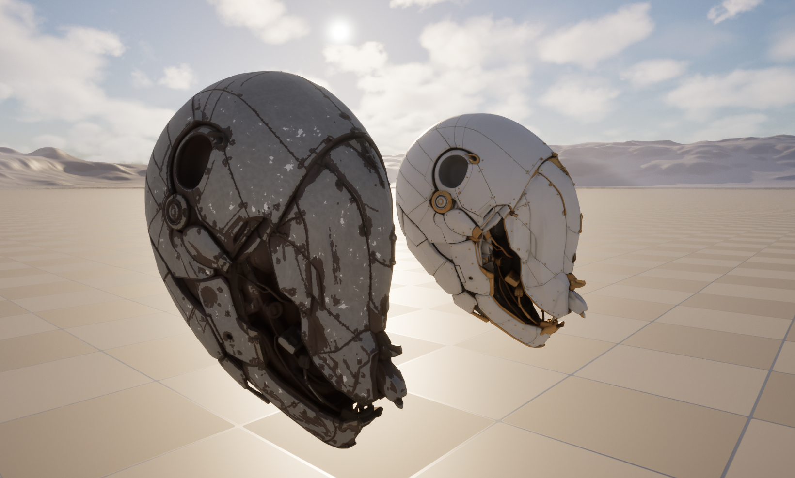

01 / 核心项目 · 资产处理
程序化资产风化管线
基于网格几何特征生成磨损、锈蚀与污垢遮罩，并映射到 UV 空间。通过 Unreal Engine 5 材质实例，可实时、无损地调整最终风化效果。
查看项目程序化工具 · 生产管线 · 实时制作
我是一名技术美术，专注于程序化工具、AI 辅助资产管线与实时制作工作流。
公共艺术与空间设计的学习背景，让我更关注 Unreal Engine 5 工具开发、Blender Python 自动化、美术可用的参数控制，以及面向实际制作的技术文档。
网易游戏技术美术实习生 · 2026 年 8 月至今

通过工具、场景与交互原型，将美术创意转化为可重复使用的实时制作流程。
项目涵盖程序化材质处理、JSON 驱动的场景生成、AI 辅助资产制作与实时交互系统。
01 / 核心项目 · 资产处理
基于网格几何特征生成磨损、锈蚀与污垢遮罩，并映射到 UV 空间。通过 Unreal Engine 5 材质实例，可实时、无损地调整最终风化效果。
查看项目
02 / 工具开发
将结构化 JSON 参数转化为模块化房间布局的 Unreal Engine 5 工具。美术人员可通过编辑器中开放的参数，调整尺寸、资产数量与场景构成。
查看项目
03 / AI 资产管线
串联 AI 概念生成、资产拆分、三维生成、Blender 优化与 Unreal Engine 验证的实验性流程。重点研究资产的制作可用性、模块化重建，以及 AI 生成几何的常见局限。
查看项目
04 / 交互原型
基于 Unreal Engine 5 的交互原型，整合距离检测、玩家输入切换、对话界面、外部 API 通信、响应解析与连续对话记录。
查看项目通过场景生成、资产制作、材质处理与交互系统项目展示的实际技能。

我专注于程序化工具、AI 辅助资产管线与实时制作工作流，目前就读于四川美术学院公共艺术专业，研究方向为城市空间艺术与设计。
自 2026 年 8 月起担任网易游戏技术美术实习生。目前围绕 Unreal Engine 5、Blender Python、蓝图、JSON、材质与外部 API 集成，持续构建可用于实际制作的工作流。
四川美术学院
公共艺术专业 · 艺术学学士
方向：城市空间艺术与设计
预计毕业时间：2027 年
LINKEDIN_URL_HERE